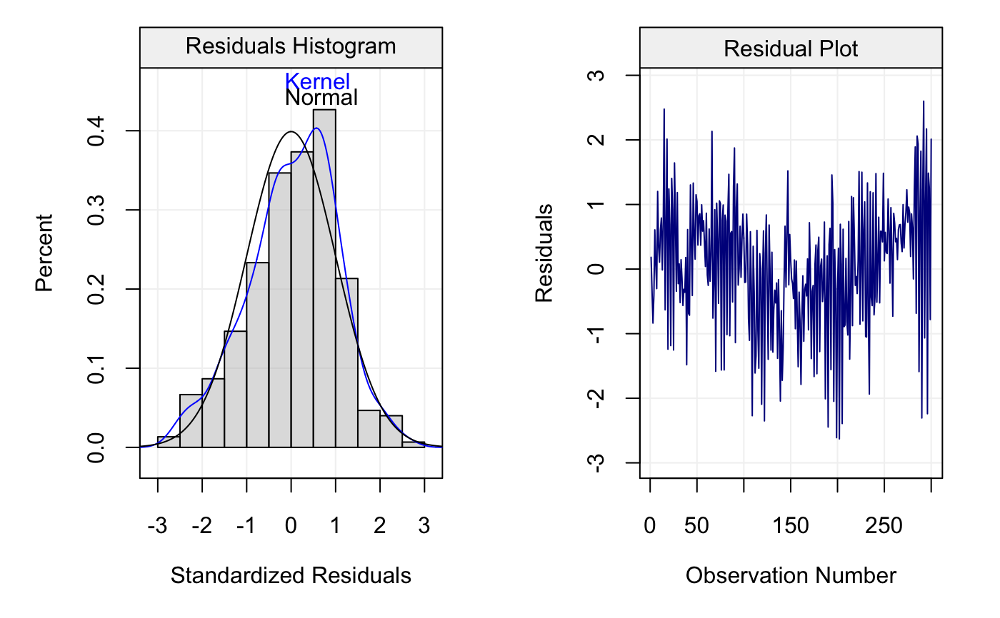

This function plots a histogram (with kernel density function and normal distribution) of the standardized residuals or a basic plot the (standardized) residuals, or both.
resid_plot(resid, std = FALSE, type = "hist", ...)
| std | A |
|---|---|
| type | A |
| ... | Additional parameters |
| Xt | The original time series data. |
| model | The |
Xt = gen_gts(300, AR(phi = c(0, 0, 0.8), sigma2 = 1)) model = arima(Xt, order = c(3,0,0), include.mean = TRUE) resid_plot(Xt, model, type = "hist")#> Warning: the condition has length > 1 and only the first element will be used#> Error in if (std) { resid = resid/sd(resid)}: argument is not interpretable as logicalresid_plot(Xt, model, type = "resid")#> Warning: the condition has length > 1 and only the first element will be used#> Error in if (std) { resid = resid/sd(resid)}: argument is not interpretable as logicalresid_plot(Xt, model, std = TRUE, type = "both")